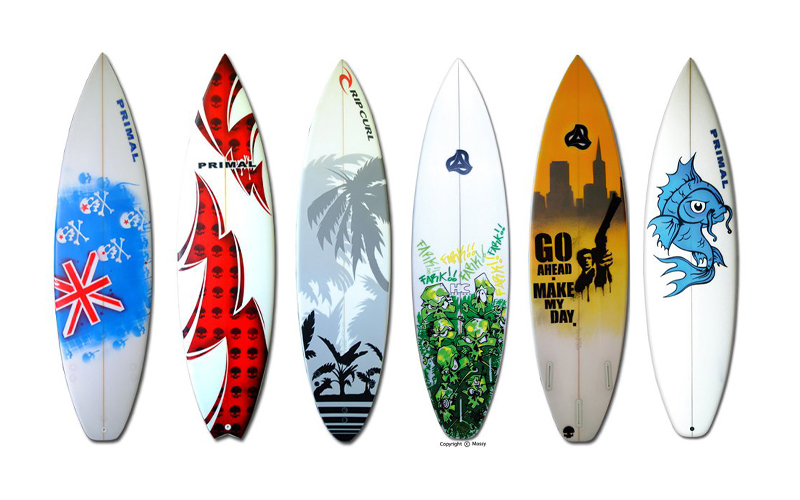

Applied Arts
Category: Forms of Art
Dancing water on a speaker
The applied arts are the application of design and decoration to everyday objects to make them aesthetically pleasing. The term is applied in distinction to the fine arts which aims to produce objects which are beautiful or provide intellectual stimulation. In practice, the two often overlap.

Surfboard with different designs
Surfboard with different designs
The fields of industrial design, graphic design, fashion design, interior design, and the decorative arts are considered applied arts. In a creative or abstract context, the fields of architecture and photography are also considered applied arts.